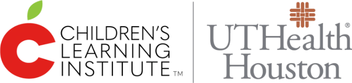
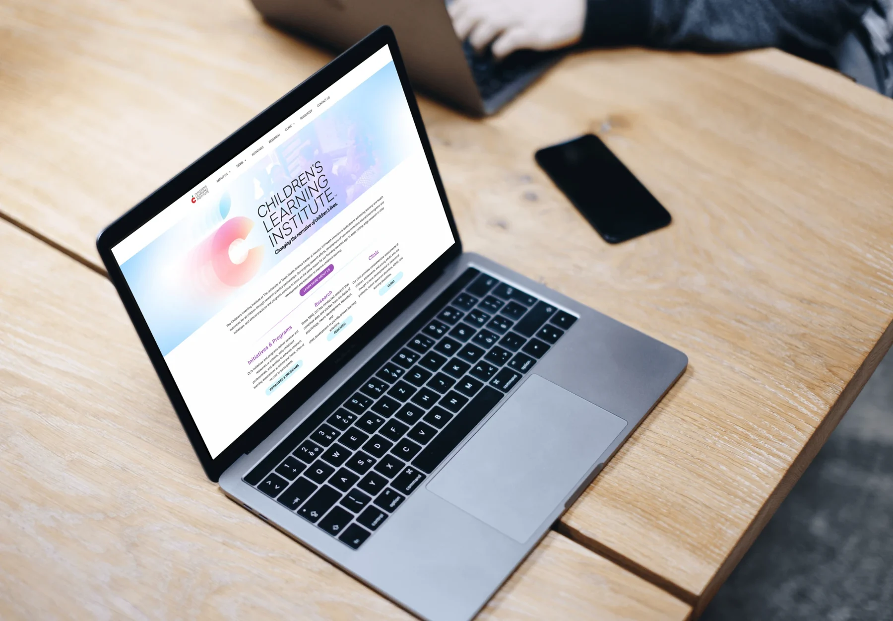

UX initiatives in the education and clinical setting.
Research-led, accessible tools that help educators and parents support every child’s learning and health.

- Company
- Children’s Learning Institute · UTHealth Houston
- Role
- Senior UX Designer – UX Researcher
- Timeline
- 2024 – 2025
- Focus
- Research, ideation workshops, wireframing, prototyping, usability testing, design systems, accessibility
The mission
Advance learning and health outcomes for all children through research, resources, clinical programs and services.
What I do
Lead UX design and research on public and internal tools, including the CLI Engage platform.
The result
A 20% improvement in usability and user satisfaction, measured through research and testing with educators.
The role
Overview
The Children’s Learning Institute’s mission is to advance learning and health outcomes for all children through research, resource development, clinical programs and service delivery.
As the User Experience Designer and Researcher at the Children’s Learning Institute, part of UTHealth Houston, I work on public and internal tools, redesigning products across the organization. I collaborate every day with engineers, product managers and business analysts.
The goal of my role: improve how our products work, so people get their work done and are more effective at improving outcomes for children.
Impact
Some of my accomplishments
- Led UX design and research for CLI Engage, working in Agile and Scrum with cross-functional teams to deliver user-centered tools that improved engagement and satisfaction for educators and parents in early childhood education.
- Applied human-centered design – so the platform works for diverse users, from educators with varying technical skills to parents following their young children’s progress.
- Ran user research, usability testing and feedback sessions – with educators, driving a 20% improvement in usability and user satisfaction.
To respect the privacy of CLI and its initiatives, details and visuals of my projects are restricted.
More case studies
Healthy HandParaillelThe Helper BeesGeisingerTandemNetflix Tudum Case Study